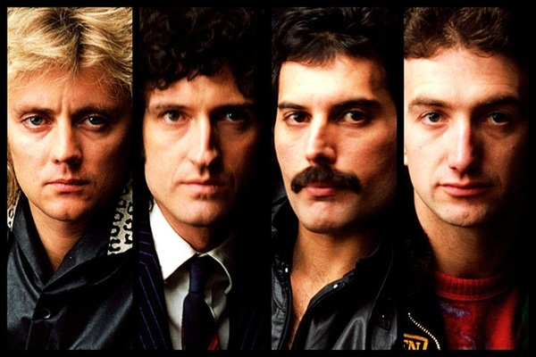

O Queen foi uma banda britânica de rock formada em Londres, em 1970. Composta por Freddie Mercury (vocal e piano), Brian May (guitarra e vocal), John Deacon (baixo) e Roger Taylor (bateria e vocal), a banda é considerada uma das maiores e mais influentes da história do rock.
Conhecidos por sua versatilidade musical, performances teatrais e vocais poderosos, o Queen criou um som único que misturava elementos de rock, pop, ópera e hard rock. Álbuns como "A Night at the Opera" (1975), "News of the World" (1977) e "The Game" (1980) são considerados clássicos do rock, com músicas como "Bohemian Rhapsody", "We Will Rock You" e "Another One Bites the Dust" que se tornaram hinos da música popular.
Ao longo de sua carreira, o Queen vendeu mais de 300 milhões de discos em todo o mundo, ganhou diversos prêmios e foi introduzido no Rock and Roll Hall of Fame em 2001. A banda encerrou suas atividades em 1991, com a morte de Freddie Mercury, mas seu legado permanece vivo, com sua música influenciando gerações de músicos e fãs.
|  | |||